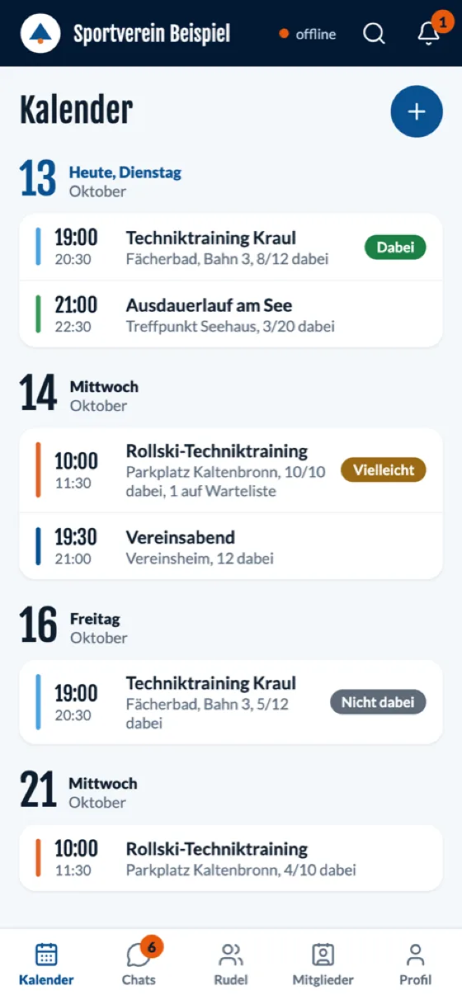
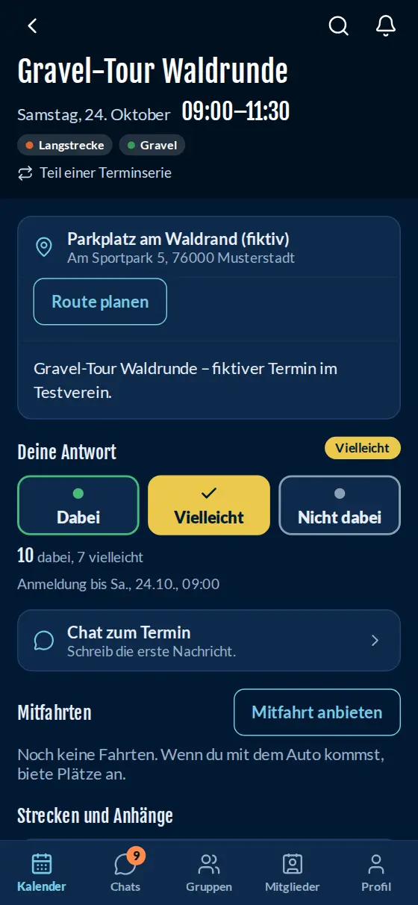
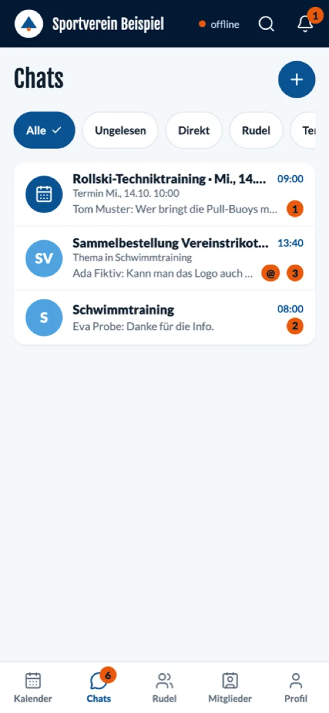
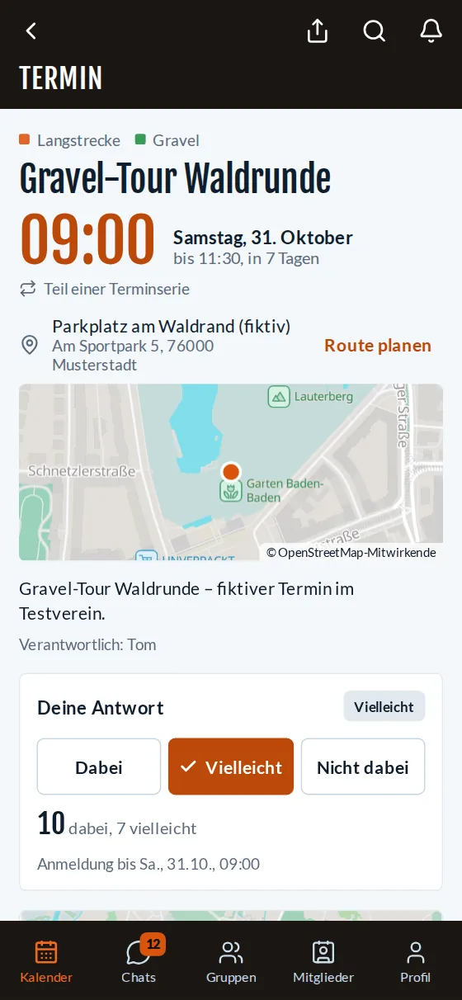
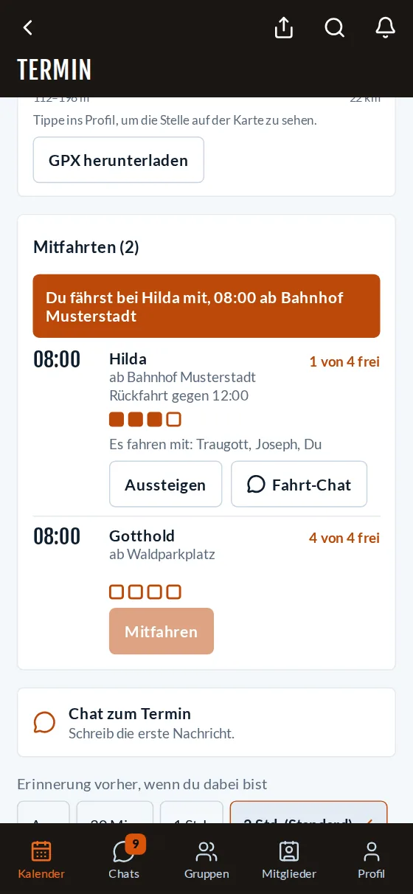
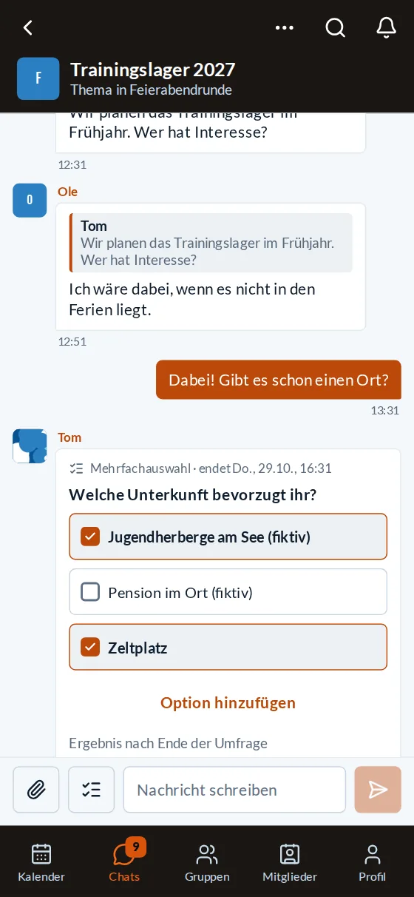
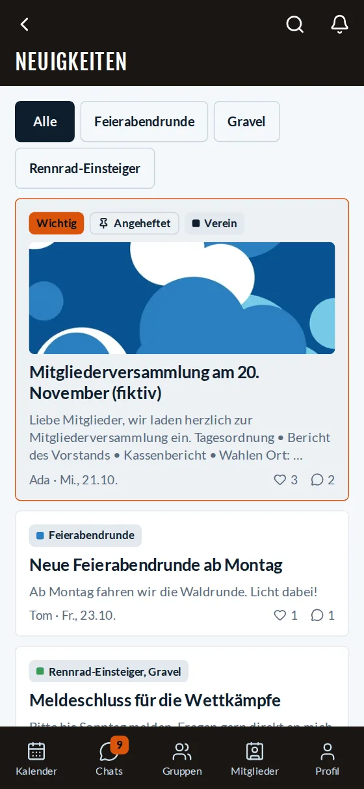
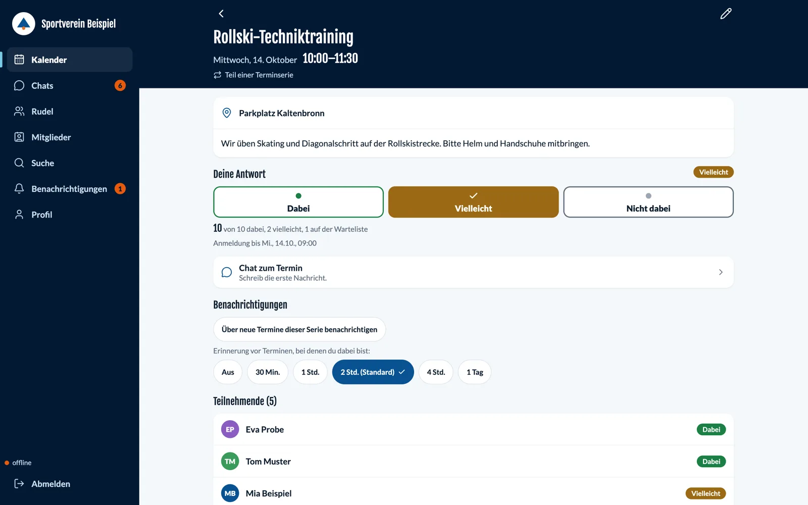

One app for the whole club
Members see their events, say yes or no, write in groups, and get the news. The board and coaches see at once who is coming.
clubforge is the app for your club: events with yes and no, groups and chats, rides, polls, and news in one place, even with no signal. The software is free; you only need your own server from about 5 € a month, and the data stays with your club.



Members see their events, say yes or no, write in groups, and get the news. The board and coaches see at once who is coming.
clubforge is open source and free, with no ads and no license fee per member. You only pay for your server: from about 5 € a month, plus the domain.
Someone in the club who can set up a server installs clubforge with one command. After that, admins do everything in the app, with no technical work.
Four things members do every week. The pictures show a sample club with made-up data.

In an event, one tap to say yes, no, or maybe. If it is full, you move up from the waitlist automatically.

Whoever is driving offers free seats. You join with one tap and sort out the details in the ride chat.

Polls right in the chat, with one answer or several, anonymous if you want, and with a deadline.

News from the club and from your own groups sits at the top of the home screen. What the board marks as important also goes out by email.
Anything marked optional needs a bit of setup. Without it, everything else works the same; admins turn individual features on and off for the club.
Single events and repeats. Members say yes, no, or maybe with one tap, and bring a guest where that is allowed. If an event is full, the waitlist moves up automatically.
Training groups, sections, or organizing teams: open, on request, or private. Each group has its events, members, a channel, and topics.
Direct messages, group chats, and event chats, with mentions. Messages can delete themselves after a set time.
Whoever is driving to the event offers free seats. Others join with one tap. The ride has its own chat.
Vote right in the chat, anonymously or with a deadline. When you are finding a time, the best option becomes an event.
Announcements to the whole club or to single groups, scheduled or pinned. Important news can also go to everyone by email.
Push, email, and the bell. Each person chooses what they get and when, with quiet hours, reminders, and an email digest daily or weekly.
Events and chats stay on the device and are there at once; with no signal the app keeps working. Responses and messages go out automatically as soon as there is a connection again.
Photos, PDFs, and GPX tracks on messages, events, and news; tracks with distance and an elevation profile, photos without location data. Needs online storage for files.
Tracks and meeting points on a map, with “plan a route”. The map of your region sits on your own server. No outside map service looks along.
On the first login, a short introduction covers groups to join, notifications, and the code of conduct. You can skip it at any time.
Members pull their events into Apple, Google, or Outlook calendars. With Google Workspace, club events can land in the club’s Google Calendar automatically.
Turn features on and off, your own words, logo and colors, profile fields, info pages, and defaults for events. Every change is in the log.
Members report content. Group admins and club admins decide: remove, warn, or mute. Each person confirms the code of conduct before writing for the first time.
Notices to everyone, with an end date. Maintenance appears on every device beforehand; during it, the app keeps working offline.
Members come from easyVerein or a CSV file, with a dry run and a safeguard against leaving everyone by accident. New members get their access by email.
Each person chooses what to share from their profile. A deletion request and a data export are in the app. After someone leaves, the record is anonymized. No ads, no trackers.
Something the club already has, such as a hall schedule, can show data in the app: on the home screen, in an event, or in the menu. Someone who can program sets that up.
You set the name, logo, and colors in admin. The words are yours to choose too: group, section, member, event, channel, and topic are called whatever you call them in the club.

There is no central platform collecting your data. Your club decides where the server stands, who has access, and how long data stays.
Someone who is active in several clubs still needs only one app. You pick the club with an invitation link or an address. The name, logo, and colors come from that club’s server.
Every club uses the same app and the same tested server package. There are no special versions for a single club: every club gets the same tested product with every update. What you want to be different goes one of three ways:
Admins look after the name, logo, colors, words, profile fields, sports, info pages, links, and defaults in admin.
Rides, polls, news, attachments, guests, direct messages, the directory, and the calendar are included and can be switched per club. New things arrive for everyone with the next update.
Your own tools run at the club or with a contractor and show their data in fixed places in the app.
clubforge is under the open-source license AGPL-3.0. You may use it, adapt it, and share it; changes to versions you run must stay open.
Login, the database, search, and sync run on your server. Push notifications use only the services of the browser and device makers.
With a passkey or a password, and password reset by email. The login page carries the club’s logo and colors.
The server checks who may see what on every access. Files and maps sit in your storage, and backups are encrypted. Google Calendar and integrations are optional.
You need a small server, a domain, and a person who knows servers, from the club or from an IT contractor.
Rough figures, as of autumn 2026. No cost per member.
clubforge is running in a pilot club. The features for day-to-day club life are there; details still change. Current version: